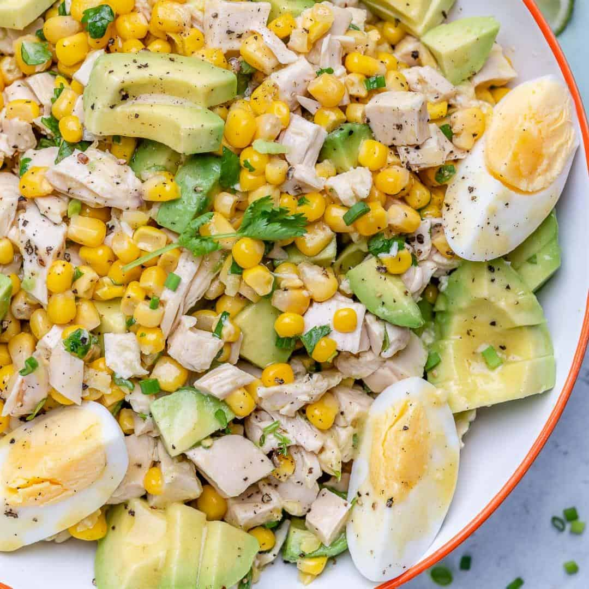

Chicken and Corn
A convenient, quick and easy recipe for lunch.
Servings 4
Ingredients
- 0.25 c. extra-virgin olive oil, divided
- 4 chicken breasts
- 1 clove(s) garlic
- 2 pt. cherry tomatoes
- 2 c. frozen corn
- 4 oz. Velveeta, cubed
- Optional: other cheeses
- Optional: fresh basil
Instructions
- Season chicken breasts and sear on skillet until golden, let rest.
- Add olive oil to skillet, add garlic, put on low to medium heat.
- Add cherry tomatoes and corn, let cook, stir sparingly.
- Meanwhile, slice chicken breasts on a diagonal.
- Top tomato and corn mixture with sliced chicken and cheese. Let melt about 10 minutes then serve.